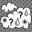
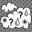

As part of my summer work at MIT's Lincoln Laboratory (Summer '16), I created an android application (LEAV-EM) and a javascript web module for the LEAV and HVX programs, respectively.
LEAV-EM alerts users in disaster affected areas (hurricanes/floods/tornadoes) to evacuate from their specific evacuation zone. LEAV-EM then routes users to the shelter that is closest to their current (or home) location and allows the user to directly interact with their state EMs.
State Emergency Managers (EMs) have the ability to set the status of the evacuation zones in my HVX module.
I designed, programmed, and developed the app. I met with the broader HVX team during our scrum meetings three times a week to present my progress.


Created a Gettysburg Battlefield companion application using Javascript and OpenLayers 3 to map points and data onto the Gettysburg battlefield. Published to the Google Play Store as "Gettysburg Monuments Map" and featured on the Gettysburg College Homepage.


Full forecast information available in tooltip on hover.


Ported (to SeaMonkey), updated, and added many new features to an old Mozilla Suite extension named MessageFaces (originally created by Jens Banneman). Newer features include: full SeaMonkey/Mozilla Suite compatibility, multiple header photo support, gravatar support (w/ caching), fast X-Face decodes to png instead of bmp (borrowed from mnenhy; original X-Face spec here), picon db support (both local and online databases), mailnews column support that visualizes sender faces, TB 3+ address book contact photo support, and monitoring capabilities similar to the unix programs picons newscheck-faces and xfaces.


Designed and wrote an Android application to play the classic solitaire-based card game "Poker Squares" (utilizing a Native Abstract Reinforcement Learning (NARL) Artificial Intelligence player created by my adviser Dr. Todd W. Neller). Available for download from the Google Play Store.


Designed and wrote an Android application called "Red Light Race" published to the Google Play Store and utilizing a neural network approximately player created by Dr. Todd W. Neller and Marcin Malec (‘13) of Gettysburg College. Featured on the Gettysburg College Homepage for my work.


Used throughout this website as custom css cursors


I created a "Platinum" Macintosh OS 9 theme clone for OS X 10.6, 10.10, and 10.11. Created original "traffic light" bitmaps modeled after the default OS 9 Platinum theme.


Traffic Lights in action:


As part of this project, I created many 48x48 picons for various companies and organizations that are now included in Steve Kinzler's picon database.


 



Adapted many different public domain playing card sets into one centralized location for ease of use. Created custom skat playing card sets in normal and small sizes (with original iconography).
Icons for Standard (kare) set:


Icons for Minimal (aicons) set:


I worked on a Classic Macintosh Typeface conversion project where I created data-fork (.dfont) and fontforge (.sfd) versions of every resource-fork typeface that Apple has shipped (including branding) dating back to the XEROX ALTO in 1979. Sources ranged from pre-release Macintosh versions based on the XEROX STAR operating system all the way up to pre-release versions of OS X (rhapsody).


Between late ~2010-2011 I contributed to the monthly Logical Increments guide (what eventually became http://www.logicalincrements.com/

Wrote simple wiki in golang. Layout/featureset based off of WikiWikiWeb/Wikipedia.
Wrote simple cms system in golang. Layout/featureset based off of Noah Grey's Greymatter.
I suppose my homepage could be considered a major project. All html, css, (and most) js were written by me..